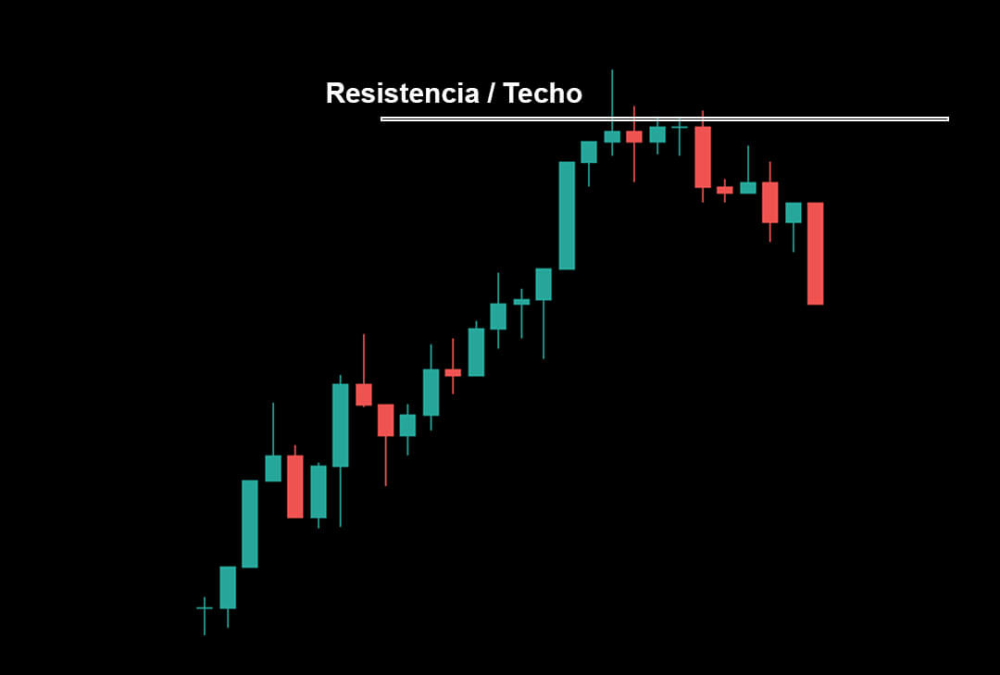
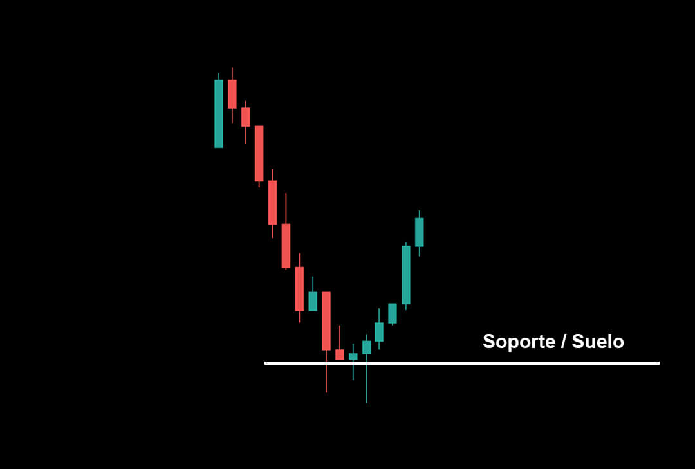
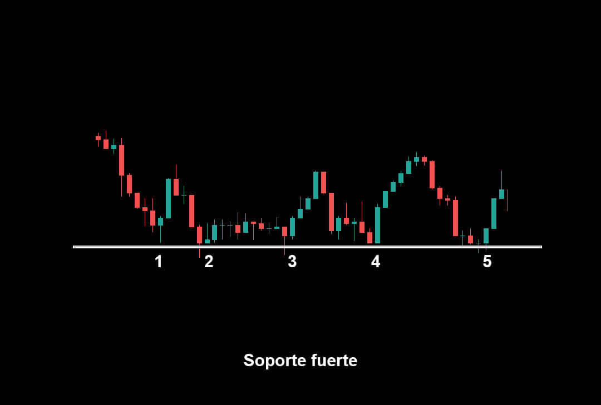
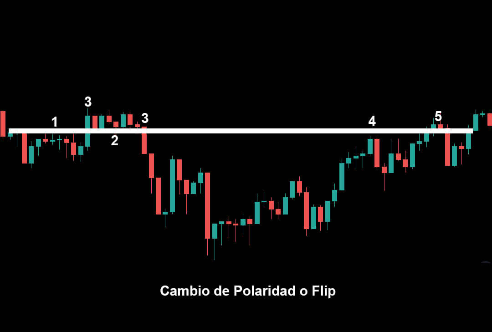
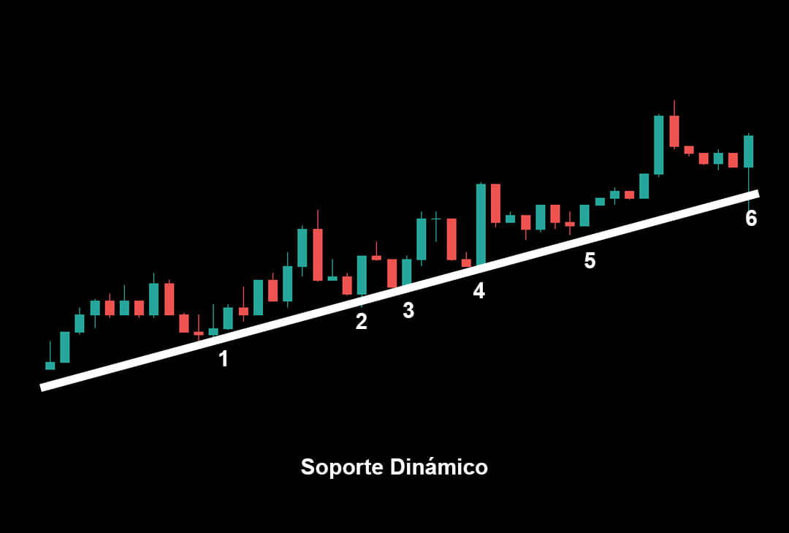
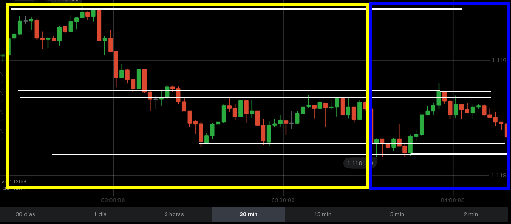

Soportes y Resistencias
Hola Trader, he tenido algunos conflictos mientras preparaba este vídeo, estaba cargándolo de información y haciéndolo mucho más difícil de comprender.
Creo que lo típico es encontrarte con ese tipo de información que al final hace no comprendamos bien lo que son soportes y resistencias y no las usemos bien. Para nosotros que hacemos análisis técnico es importante que sepamos usar de manera adecuada estas zonas.
A continuación te dejo el vídeo con la clase, realmente una clase corta de menos de 4 minutos, que podrás complementarlas con otras clases que te dejaré más abajo. Pero antes continúa leyendo porque también dejo material de apoyo.
Una resistencia o techo es el punto más alto al cual el precio pudo llegar tras un movimiento alcista, la fuerza de venta en este punto supera a la de compra haciendo que el precio baje.

Un soporte o suelo es el punto más bajo al cual el precio pudo llegar tras un movimiento bajista, la fuerza de compra en este punto supera a la de venta haciendo que el precio suba.

Los soportes y resistencias son débiles cuando solo presentan un testeo o toque, cómo sucede en los ejemplos anteriores.
Un nivel es fuerte cuando presenta dos testeos o un cambio de polaridad. Nuestras zonas de soportes y resistencias fuertes también pueden ser llamados nivel clave.

Los cambios de polaridad o Flip son zonas que en un principio eran utilizadas como soportes y luego han sido rotas y ahora pasan a ser usadas cómo resistencias o también pasa con resistencias que son rotas y pasan a ser soportes.
En el siguiente ejemplo podemos apreciar cómo es usada cómo resistencia (1), luego la vela (3) rompe la resistencia, en (2) podemos ver cómo el precio usa la zona que antes era resistencia ahora cómo un soporte.

En ese momento se crea el cambio de polaridad o flip. Podemos observar que luego el precio rompe (3) la resistencia, varias velas más adelante el precio vuelve a interactuar con nuestra zona fuerte (4) usándolo como resistencia y más adelante creando un rompimiento falso.
Es importante que sepamos que los soportes y resistencias no son líneas, sino zonas, áreas donde el precio reacciona.
También podemos encontrar niveles inclinados, estos suelen ser llamados Soportes y Resistencias dinámicos. Se identifican a partir del segundo testeo, de estos niveles dinámicos solo podemos confiar una vez, cuando los niveles son rotos las probabilidades de que el precio lo vuelva a respetar en un futuro son muy escasas.

Con esto hemos terminado la clase y hemos avanzado hasta éste importante tema, Para completar este camino recorrido con tips e información extra te invito a que veas las clases ordenadas en esta lista de reproducción: Click Aquí para acceder a la lista
Lista de reproduccion de YouTube: Módulo 1 - Curso de Acción del Precio
En la próxima clase resolveré las dudas sobre el tema, deja tus preguntas en los comentarios del vídeo o en el hilo del salón virtual.
Actividad #3
La actividad para esta ocasión es simple, debes identificar Soportes y Resistencias en tu gráfico, tomarle una captura y subirlo al salón bajo la etiqueta «S/R» y el #Actividad3
No solo debes identificarlo y compartirlo al grupo y preguntar «¿están bien trazados?» tomate tu tiempo y espera a que el mercado llegue a tus niveles marcados y observa cómo reacciona el precio. De esta manera podrás experimentar y obtener la experiencia de ver cómo se mueve el precio en las zonas que tu identificas.

Gracias Trader por acompañarme en esta clase, Permanece atento a la próxima clase ya que en ella ¡se resolverán las dudas que tengas sobre el tema!